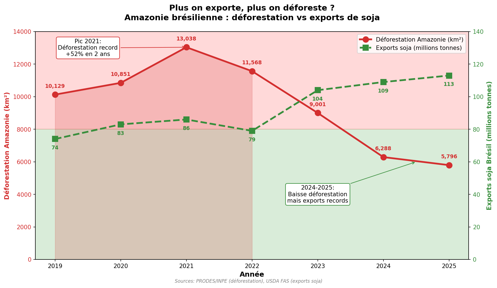
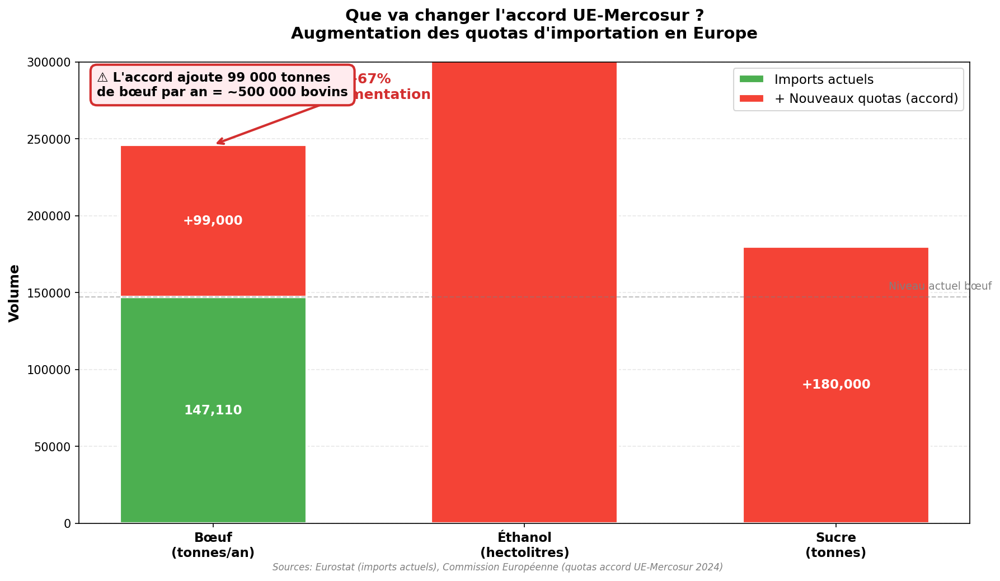
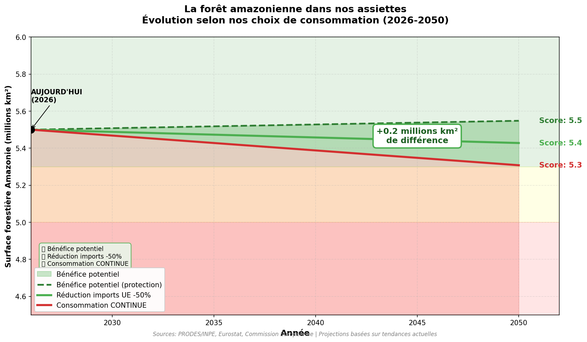
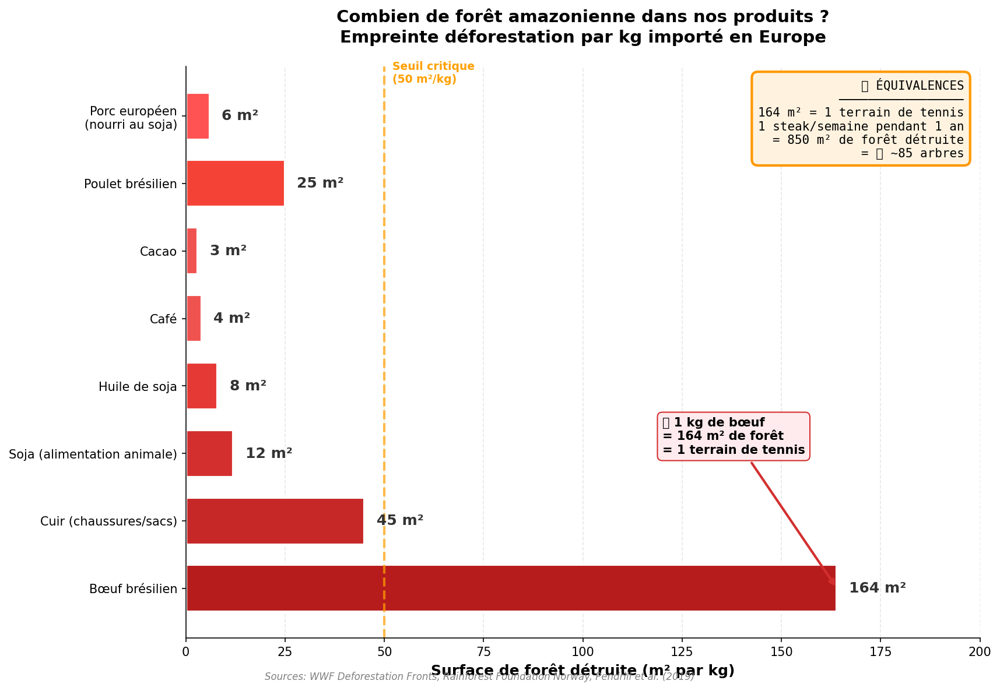

Analyse des liens entre commerce et environnement
Donnees 2020-2025
L'accord UE-Mercosur, finalise en decembre 2024, est le plus grand accord commercial jamais negocie par l'Union europeenne. Il concerne le Bresil, l'Argentine, le Paraguay et l'Uruguay - des pays qui abritent l'Amazonie et le Gran Chaco, deux des ecosystemes les plus menaces au monde.
Ce graphique montre l'evolution parallele de la deforestation amazonienne et des exports de soja bresiliens entre 2019 et 2025.

Sources : PRODES/INPE (deforestation), USDA FAS (exports soja)
L'accord prevoit de nouveaux quotas d'importation a tarif reduit pour plusieurs produits agricoles.

Sources : Eurostat, Commission Europeenne
| Produit | Imports actuels | Nouveau quota | Augmentation |
|---|---|---|---|
| Boeuf | 147 110 tonnes | +99 000 tonnes | +67% |
| Ethanol | - | +650 000 hectolitres | Nouveau |
| Sucre | - | +180 000 tonnes | Nouveau |
Projection de l'evolution de la foret amazonienne selon differents scenarios de consommation europeenne.

Projections basees sur les tendances actuelles
Combien de metres carres de foret sont detruits pour produire 1 kg de chaque produit importe ?

Sources : WWF Deforestation Fronts, Pendrill et al. (2019)
| Pays | Perte foret 2022 (Mha) | Production soja 2024 (Mt) | Production boeuf 2024 (Mt) |
|---|---|---|---|
| Bresil | 3.31 | 154 | 11.85 |
| Argentine | 0.23 | 51 | 3.3 |
| Paraguay | 0.22 | 10.3 | 0.59 |
| Uruguay | - | - | 0.6 |